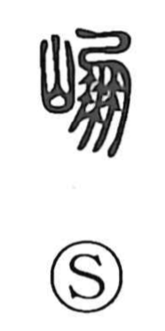

崩

Uncategorized
Kun: kuzureru, kuzusu | On: hou
to collapse ・ to crumble ・ imperial demise
Explanation
崩 is a phono-semantic character: the mountain radical 山 supplies the idea of cliffs and slopes, while 朋 serves as the phonetic, giving the on reading hou and evoking the deep, booming roar of a landslide. The Shuowen defines it as “a breaking mountain,” hence its core senses of collapsing, crumbling, and falling in. An Old Script form cited there includes the element 自, which Shirakawa understands as the ‘ladder of the gods,’ the means by which deities ascend and descend; this suggests that places marked by a mountain’s collapse were regarded as numinous. Against this backdrop, the honorific use of 崩 for the death of the Son of Heaven can be seen as likening that passing to the collapse of a sacred place.